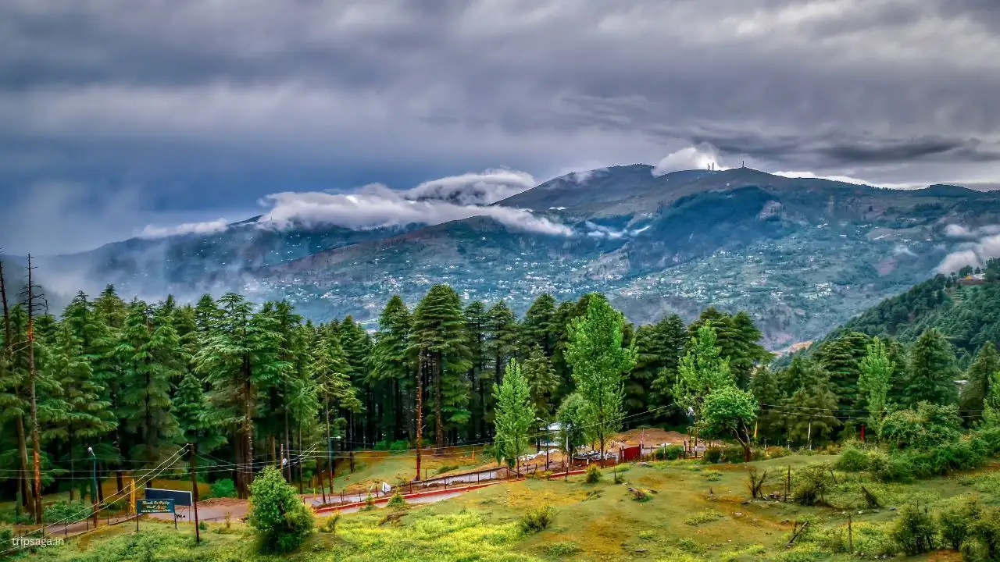

JAMMU AND KASHMIR

Jammu and Kashmir, located in the northern part of India, is renowned for its breathtaking natural beauty and rich cultural
heritage. Nestled in the Himalayas, it boasts of snow-capped peaks, lush valleys, and serene lakes like Dal Lake in Srinagar.
The region is known for its diverse culture, influenced by Hindu, Muslim, and Sikh traditions, which coexist harmoniously.
However, it has also been historically marked by political tensions and conflicts. Despite these challenges,
Jammu and Kashmir remains a land of stunning landscapes and warm hospitality, drawing tourists and pilgrims alike
from around the world.